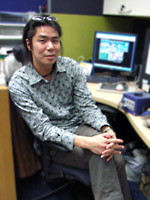

現在はどのようなお仕事をされているのですか？
一言で言うとモノ創りの“現場監督”です。
僕はずっと現場で叩き上げでやってきたので、
ディレクターになってからも基本的にはシナリオやゲームデザインも担当しているし、
これからも現場の一作業員として頑張っていけたらと考えています。
まぁ、そうは言っても若いヤツラがどんどん成長してきて
これからのセガ、あるいはソニックブランドを作り上げていく上で
色々な意味で少し広範囲な視野でモノを創る立場になってきているのかな？
今までのお仕事の中で、一番印象に残っているものは何ですか？
色々やってきて正直思い出したくない仕事の方が多いのですが(笑)、
一番楽しかった仕事は『チューチューロケット！』の
パズルステージ製作です。
ルールが明確な分、
企画意図を短期間でストレートに反映させることができるので
色々遊ばせてもらいました。
ソニックシリーズの中で、一番好きなキャラクターは誰ですか？
その理由も教えて下さい。
エミーちゃんです。
常に自己中であり、周囲のヤツラを己の都合で引きずり回すところ。
この強引な性格、女王様的気質が発する台詞が、ある種の催眠効果を持って聞く者の脳髄を揺さぶり
トランス状態にも似た恍惚感を…。
失礼しました。(笑)
逃げ惑うソニックの跡を、半ば強引に追いかけるところなんて健気でかわいいですよね。
森本さんにとってソニックとは？
なんだろう…？
うまく形容しがたいけど、あえて言うなら“上司”ですかね？
わがままで扱い辛いけど、頼りになって、最後には導いてくれる。
「ソニックライダーズを作り終えて、ちょっとソニックに評価された」そんな感じです。
最後に、「ソニック チャンネル」をご覧になっているみなさんに
一言お願いできますでしょうか？
いつも「ソニック チャンネル」をご覧頂き、ありがとうございます。
そのうち「ジェット チャンネル」というのも作りたいなと思っています(笑)。
まぁ、それは冗談として
これからもソニックの持っている世界観を大切にしながらも、
その中で新しいソニックのスタイルを確立できるような
ゲームを作っていきたいと思っていますので、期待していてください。
『ソニックライダーズ』ディレクター森本が、
インターネットラジオ番組「イソッチのいつもシャキシャキ！」に出演します！
ここでは話されていない裏話が聞けるかも！？
番組名：「イソッチのいつもシャキシャキ！」
公開日：
1：2006年5月2日～5月9日まで（Vol,12）
2：2006年5月10日～5月16日まで（Vol,13）
3：2006年5月17日～5月23日まで（Vol,14）
4：2006年5月24日～5月30日まで（Vol,15）
番組サイト：http://www.carrothouse.info/radio/iso.htm